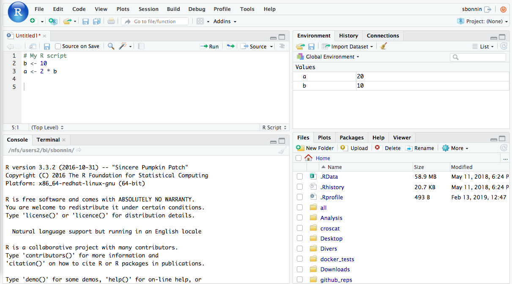

Chapter 2: An Introduction to R
STA258: Statistics with Applied Probability
University of Toronto Mississauga

Nishan Mudalige, Sarah Halime, Ashwin Selvapandian
Chapter Roadmap
2.1 - Getting Started with R Learn what R is and why scripts make statistical work reproducible and transparent.
2.2 - Installation and Interfaces Install R and RStudio, understand the four RStudio panes, and learn about Positron.
2.3 - Programming in R Use R as a calculator, work with data structures, manage data, and create basic visualizations.
Core skill Writing commands that make statistical work clear and repeatable.
Core tool RStudio - scripts, output, plots, and help pages in one place.
Core habit Save work in scripts rather than relying on the Console alone.
2.1 Getting Started with R
R
R is used for data manipulation, statistics, and graphics. It supports a wide range of operations (+, −, /, <, etc.) on vectors, arrays, and matrices, and includes a large collection of built-in functions and user-contributed packages.
Free Open-source and free to install on any platform.
Extensible A large ecosystem of contributed packages is available through CRAN.
Speaks Many Languages Interfaces with C, C++, FORTRAN, Python, and SQL.
2.1 Why Scripts, Not Clicks?
Point-and-click vs scripting
Point-and-click tools are useful for quick work, but the steps behind the result can be hard to review or repeat.
Click workflow Open menu → choose options → click Run. Six months later: which options did you pick?
Script workflow mean(marks) saved to a .R file. Re-run on new data with one keystroke.
Why scripts matter
R lets us write scripts that document each step of an analysis. This promotes reproducibility, version control, and transparency - analyses can be automated, customised, and rerun on new data with minimal effort.
2.2 Installing R and RStudio
R
The programming language that performs the calculations.
Install this first.
RStudio
The interface for writing scripts, running code, viewing plots, and managing files.
Install this second.
RStudio is the interface but R does the computation - R must be installed first. The next two slides walk through each install.
2.2.1 Installing R: CRAN
Install R:
- Open CRAN.
- Choose Windows, macOS, or Linux.
- Download the installer.
- Use the default installation settings.
If the page below does not load, use the button to open the official site directly.
2.2.2 Installing RStudio
Install RStudio Desktop:
- Open the Posit download page.
- Choose RStudio Desktop (free).
- Download the installer for your OS.
- Run the installer.
- Open RStudio and check the Console.
RStudio auto-detects R if R was installed first.
RStudio Panes
Source Write and save R scripts, R Markdown, and Quarto files.
→
Console Run commands and see immediate output, messages, and errors.
→

Environment / History Objects currently in memory and commands that have been run.
←
Files / Plots / Packages / Help Browse files, view plots, load packages, and read help pages.
←
2.2.3 Positron
What is Positron?
Positron is a cross-platform desktop IDE developed by Posit PBC (formerly RStudio). It is built on the Visual Studio Code architecture and powered by Electron, and runs on Windows, macOS, and Linux.
It supports R, Python, JavaScript, and Quarto documents.
Download: positron.posit.co
RStudio and Positron
RStudio is maintained by Posit, a company that also develops Shiny, Quarto, and R Markdown.
Positron is optional and is not required for this course. RStudio will be used for course demonstrations, exercises, and assignments.
2.3 Programming in R
Why R for statistics?
- Built specifically for data analysis, statistics, and visualization
- Rich ecosystem of packages and built-in statistical functions
- Open source and free on every major operating system
- Strong support for reproducible reporting through R Markdown and Quarto
- Widely used in academia, industry, and government
2.3.1 R as a Powerful Calculator
| Symbol | Meaning |
|---|---|
+ |
Add |
- |
Subtract |
* |
Multiply |
/ |
Divide |
^ |
Power |
R follows standard order of operations. Use parentheses to control evaluation.
More Operators
9 %% 4 → remainder after dividing 9 by 4.
9 %/% 4 → how many complete 4s fit into 9.
sqrt(), round(), and abs() take inputs inside parentheses - these are function calls.
Check in R: Calculator Practice
Declaring Variables
Variable
A variable stores a value so it can be reused later. The assignment arrow <- means “store the value on the right in the name on the left.”
Check in R: Variables
2.3.2 Basic R Data Structures
The primary data structures in R are vectors, lists, matrices, arrays, factors, and data frames.
| Structure | Stores | Dimensions | Can mix types? |
|---|---|---|---|
| Vector | Values of one type | 1-D | No |
| List | Values or objects of different types | 1-D | Yes |
| Matrix | Values of one type | 2-D | No |
| Array | Values of one type | n-D | No |
| Factor | Categorical values stored as levels | 1-D | No |
| Data frame | One type within each column | 2-D | Yes, across columns |
For most applied statistics the main structure is the data frame, because it resembles a spreadsheet where each column can hold a different type.
Vectors
Numeric vector
A vector stores multiple values of the same type in one object. The function c() combines values.
Arithmetic operations are applied element by element. mean() computes the average, and length() counts the elements.
Check in R: Vectors
Indexing from a Vector
Indexing
Square brackets [ ] select elements by position.
R starts counting at 1, not 0.
2:4 creates the sequence 2, 3, 4.
Check in R: Vector Indexing
Question
Given marks <- c(80, 75, 90, 88, 92), what does marks[c(2, 4)] return?
- The 2nd and 4th elements: 75 and 88
- The 2nd through 4th elements: 75, 90, 88
- The values 2 and 4
- Elements 3 and 5: 90 and 92, because R counts from 0
Lists
List
A list stores elements of different types in one object - unlike a vector, which requires all elements to be the same type.
Lists are used to organise complex or mixed data, and are the building block for data frames.
Matrices
Matrix
A matrix is a two-dimensional data structure storing elements of the same type. Elements are selected using [row, column]. Matrices support addition, multiplication, and transposition, and a square, invertible matrix can also be inverted.
Used in linear algebra, statistics, and data analysis.
Arrays and Factors
Arrays extend matrices to n dimensions. Useful for simulations and higher-dimensional data.
Factors store categorical values using predefined categories called levels. They are treated as categorical variables in statistical models.
Reading CSV-Style Data
Data frame
A data frame is a table where each row is one observation and each column is one variable. Columns can hold different types.
read.csv() reads comma-separated data into a data frame.
Reading CSV from a URL
Loading from a public source
read.csv() also accepts a URL. This is the Palmer Penguins dataset (344 penguins, 3 species).
Where to find datasets:
Data Frame Basics
| Command | What it does |
|---|---|
head() |
View first rows |
dim() |
Count rows and columns |
names() |
List column names |
summary() |
Summary statistics |
Run these checks whenever you open a new dataset.
Isolating Columns and Rows
Two selection methods
data$column - select a column by name (returns a vector).
data[row, column] - select rows and columns by position or name.
Check in R: Selecting a Column
Check in R: Selecting Rows and Columns
Question
Which R data structure best holds a dataset where each column stores a different type - for example, student name (text), mark (number), and passed (TRUE/FALSE)?
- Data frame
- Numeric vector
- Matrix
- Factor
2.3.3 Using Basic Functions in R
| Function | Purpose |
|---|---|
max(), min() |
Largest and smallest values |
mean(), sum() |
Average and total |
sort() |
Sorted values |
order() |
Indices that sort the values |
These functions work on vectors, and many also apply to data-frame columns or matrices with additional arguments.
2.3.4 Histogram: the faithful Dataset
faithful
A built-in R dataset recording Old Faithful geyser eruptions. It has two numeric variables: eruption duration and waiting time between eruptions.
A histogram groups values into intervals and shows how many observations fall in each interval.
Histogram Components
plot = FALSE suppresses the graph and returns the underlying values - useful for checking breakpoints and counts directly.
Check in R: Histograms
2.3.5 Installing and Loading Packages
# 1. Install once (downloads from CRAN)
install.packages("ggplot2")
install.packages("tidyverse")
# 2. Load every session
library(ggplot2)
library(tidyverse) # loads dplyr, tidyr,
# readr, purrr, and more
# View all installed packages
installed.packages()
# Search for packages by keyword
help.search("regression")Packages
R packages provide specialised functions stored on CRAN (the Comprehensive R Archive Network), which you accessed when installing R.
Install a package once with install.packages(), then load it each session with library().
tidyverse
A meta-package that bundles ggplot2 (plots), dplyr (filter/select/mutate), tidyr, readr, purrr, and others. One install, one library call, the full data-science toolkit.
Using ggplot2
ggplot2 structure
ggplot() - start the plot.
aes() - map variables to axes.
geom_point() - choose the plot type.
labs() - add labels.
theme_minimal() - clean background.
Using tidyverse: dplyr
dplyr verbs
filter() - keep rows that match a condition.
select() - keep only the columns you name.
arrange() - sort rows by one or more columns.
The pipe |> (or %>%) chains verbs together: read it as “then”.
Check in R: ggplot2
Task Change the plot so the x-axis shows student and the y-axis shows mark, using a bar chart instead of points.
Hint: replace geom_point() with geom_col().
Question
You ran install.packages("ggplot2") last week. What do you need to do to use ggplot2 in a new R session today?
- Call
library(ggplot2)- packages must be loaded each session - Run
install.packages("ggplot2")again - Nothing - installed packages load automatically every session
- Reinstall R
Chapter Summary
R & RStudio R is an open-source language for statistics, data analysis, and graphics.
RStudio is the interface for writing scripts, running code, and viewing plots.
Scripts make analyses easy to save, reproduce, and rerun.
Data Structures Variables store values or objects; vectors store multiple values of one type.
Lists, matrices, arrays, factors, and data frames organize richer data.
Indexing with [ ] selects elements, rows, and columns.
Functions & Packages Functions like mean(), sort(), and summary() reuse common operations.
Packages extend R: install.packages() once, library() each session.
Base graphics and ggplot2 both create statistical plots.
One slide takeaway. R turns statistical work into reusable, shareable scripts - write the code once, then rerun, tweak, and visualize it on any dataset.
Up Next
Chapter 3 - Descriptive Statistics
Now that you can run R, we use it to summarize data - measures of center and spread, and the plots that reveal the shape of a distribution.
STA258 | Chapter 2